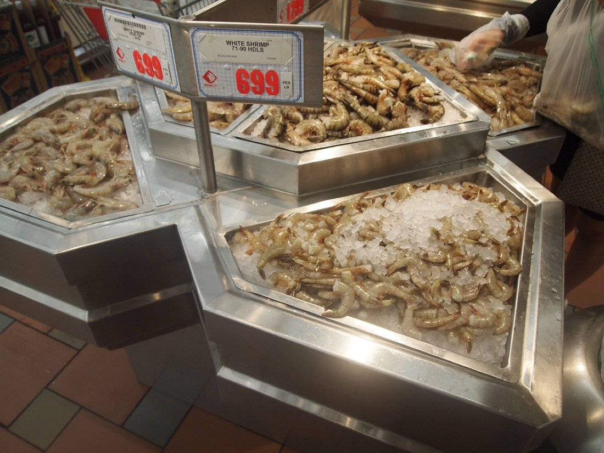
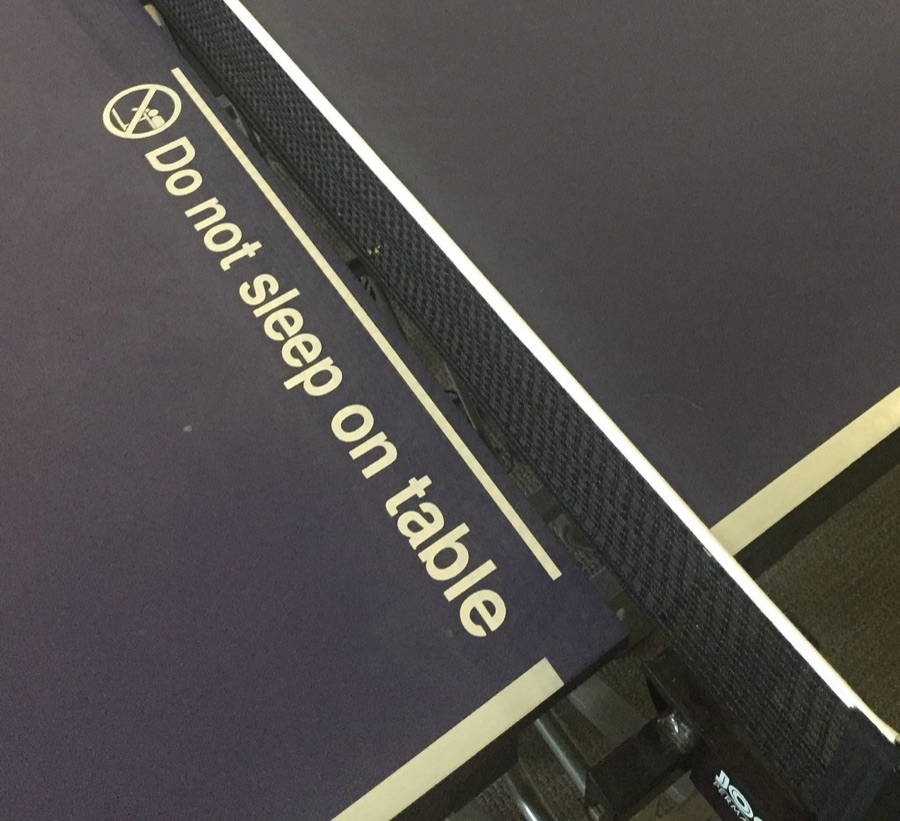

Чем занимаюсь
Я не очень разбираюсь в умных словах про бизнес. Но кое-что у меня получилось. Расскажу как есть.

Креветочная компания «Бабба-Гамп»
Мой друг Бабба мечтал ловить креветок, но не успел. Я пообещал — и сделал за нас двоих. Купил лодку, назвал «Дженни», и сначала не ловилось ничегошеньки. А потом случился шторм, все другие лодки поломались, а моя уцелела. Так вышла целая компания.
«Бабба-Гамп Шримп»
Лодки, улов, поставки. Я не гений, зато честный, и люди это ценят. Партнёр — лейтенант Дэн, он занимается умными денежными штуками.
Удачные вложения
Лейтенант Дэн вложил наши деньги в «какую-то фруктовую компанию» — кажется, с яблоком. С тех пор о деньгах волноваться не нужно.
Бег
Начал бежать через всю Америку — и бежал три года. За мной пошли люди и журналисты. Я случайно вдохновил кучу народу. Просто ногами.

Пинг-понг и служба
Был чемпионом, служил стране, получил медаль. Делал что должно и не жаловался.